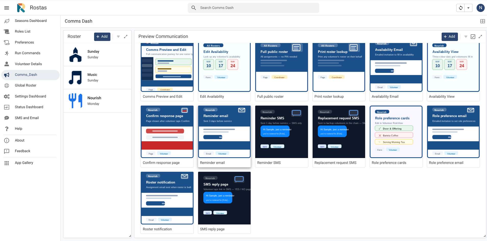
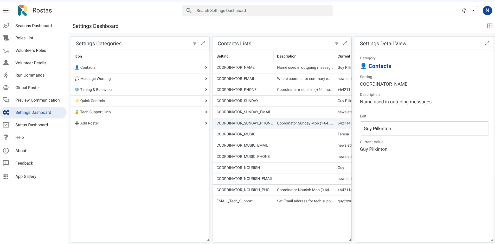
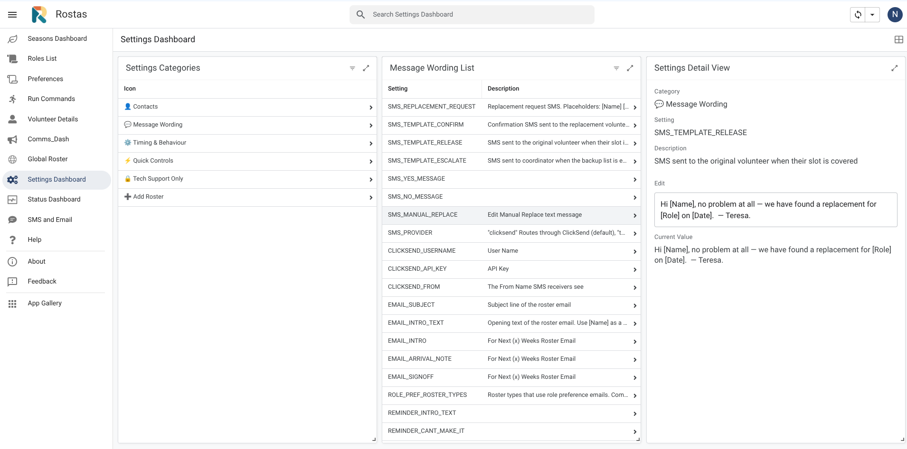
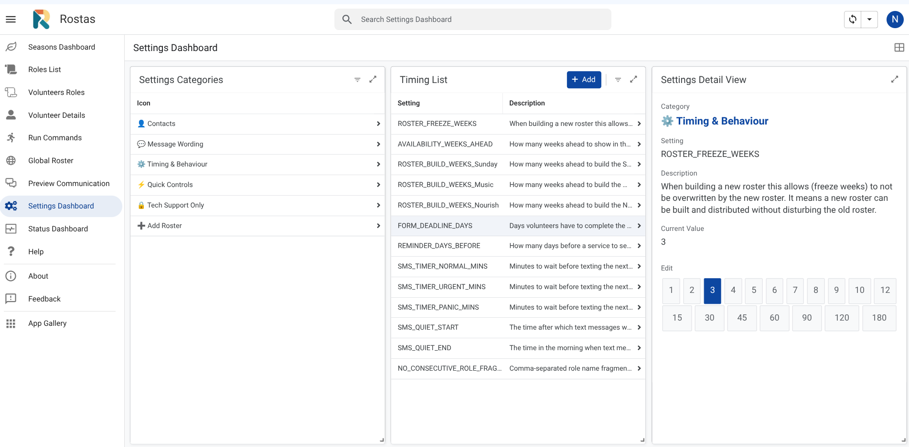
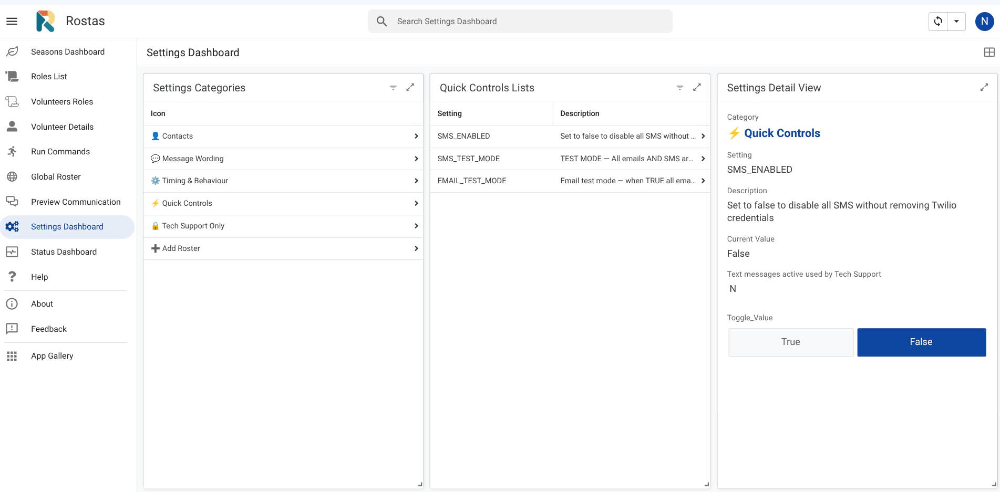
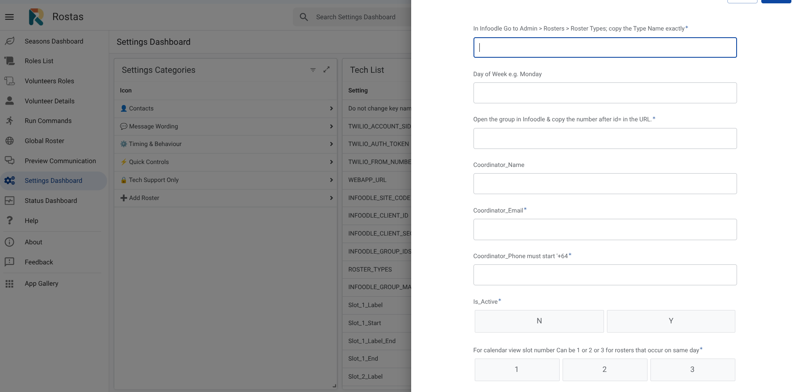

Rostas is built primarily for desktop access, though it can also be used on a tablet.
When you open Rostas you will see these views in the left-hand sidebar. Tap the relevant view to navigate to that area of the system.
Also available: SMS and Email (opt-out management) — see sidebar.


Every action writes a result message in the Command history panel. Common results:
Each roster follows the same sequence of steps. Run them in order — skipping a step or running them out of order can produce unexpected results.
| Step | Action | What it does | Who |
|---|---|---|---|
| 0 | Refresh calendar | Recalculates season dates, overlays NZ public and school holidays. | Roster Coordinator |
| 1 | Sync volunteers | Pulls latest volunteer data from Infoodle (auto at 2am each night or manually via Run Commands). | Overall Coordinator |
| 2 | Role preferences | For any new volunteers added to a roster either:
| Roster Coordinator |
| 3 | Send availability emails | Ask volunteers which dates they are available for. (Run Commands view) | Roster Coordinator |
| 3b | Check frequency settings | Set a monthly cap per roster type per volunteer. Use Volunteer Details View | Roster Coordinator |
| 4 | Build roster | System assigns volunteers to roles based on availability & preferences. (Run Commands - Build Roster) | Roster Coordinator |
| 5 | Preview communications | Check email template formatting, and make sure you are happy with the email and SMS messages that will be sent out. (Comms_Dash sidebar view or Run Commands) | Roster Coordinator |
| 6 | Send notifications | Volunteers receive assignment email and SMS. (Run Commands - Send Notifications) | Roster Coordinator |
Run this at the start of each roster build and any time you make changes to season dates. It recalculates all roster dates, overlays NZ public holidays and school holidays, and updates the calendar view.
In Rostas → Run Commands, tap 0. Refresh calendar. Wait for the result message to confirm completion. Check the Seasons Calendar view to confirm dates look correct.

Role preferences tell the system which roles each volunteer is willing to do. The system needs this information before it can build the roster.
Volunteers receive a personalised link and tap through each role, choosing 'Yes I do this', 'Happy to fill in', or 'Not for me'.
In Rostas → Run Commands, tap 2. Send role preference emails. Volunteers receive an email with a personalised link. Allow a few days for responses before building the roster. Check who has responded in the Volunteers Roles view.
If a volunteer is not comfortable using the link, or for new volunteers who have not yet set preferences, you can set their roles directly in Rostas.
Open the Volunteers Roles view. Select the volunteer on the left, then review and edit their role assignments on the right.


Frequency settings control how many times per month a volunteer can be rostered for a given roster type. The roster engine strictly enforces these caps.


Availability emails go to all active volunteers for your roster type. Each volunteer receives a personalised link showing the upcoming dates. They tap each date to mark themselves Available, Unsure, or Can't make it, then tap Save.
In Rostas → Run Commands, tap 3. Send availability emails. The result confirms how many emails were sent. Allow 5–7 days for volunteers to respond. Volunteers who do not respond are treated as Unavailable at roster build time.


You can update a volunteer's availability directly in Rostas via the Individual Details view. Select the volunteer from the left panel, then use the Availability Choices panel to find the date and update their status.
The roster engine assigns volunteers to roles based on their availability and role preferences. It works through four priority tiers and within each tier selects the volunteer who has been rostered least recently.
| Tier | Availability | Role Match | Sort within tier |
|---|---|---|---|
| 1 | ✅ Available | Primary role (Yes, I do this) | Fewest assignments in lookback window, then longest since this specific role |
| 2 | ✅ Available | Fillable role (Happy to fill in) | Same as Tier 1 |
| 3 | ❓ Unsure | Primary role | Same as Tier 1 |
| 4 | ❓ Unsure | Fillable role | Same as Tier 1 |
In Rostas → Run Commands, tap 4. Build roster. The Music roster can take up to 10 minutes — this is normal. The system builds the next 8 weeks of dates by default (configurable per roster type in Settings — ROSTER_BUILD_WEEKS_{Type}). Check the result message: Filled, Pending, and Unfilled counts. Review the roster in the Global Roster view before sending.
In the Global Roster view, tap or click any assignment to open the edit panel on the right. You will see three options. Take particular notice of any red (unfilled) dates — these may require you to find a replacement or it may be workable to have fewer volunteers on duty that week.
You also have the Following Options at this Stage:


Before sending notifications, use the Comms_Dash view to preview every communication your volunteers will receive — notification emails, reminder emails, SMS templates, role preference cards, and the SMS reply page. This is the same content volunteers will see.
Open Rostas → Comms_Dash in the sidebar. Select a roster on the left. A card grid appears showing every step of the communication journey — tap any card to open the full preview in a browser tab. Check volunteer names, roles, dates, and links all look correct. You can also adjust the wording of SMS messages and email templates in the Settings view. Close the preview and proceed to Step 6 when satisfied.

Notifications go to every volunteer with a Filled or Pending assignment. Each volunteer receives an email with their role and date, and a link to confirm (for pending) or decline. An SMS is also sent.
In Rostas → Run Commands, tap 6. Send Notifications. The result confirms how many volunteers were notified. Volunteers receive their email and SMS within a few minutes. Volunteers who have opted out of SMS or email are counted as Skipped in the result — not as Errors.
Use manual replacement when a volunteer contacts you directly — for example, they phone to say they cannot make it and suggest someone else, or you need to make a swap yourself without waiting for the SMS chain.
Go to Rostas → Global Roster or Individual Details view. Select the assignment you want to change. Tap Replace Volunteer, then select the replacement from the dropdown. Save. The system processes the swap within 1 minute. Check the Status column — it changes from Pending to Done when complete.
When a volunteer taps 'Can't make it' in their notification email, the system automatically begins contacting other available volunteers by SMS one at a time.
The Status Dashboard shows the status of all system events — roster builds, role syncs, and notifications. Check it after running any action to confirm completion. If an error appears, use the Email Tech Support button to send an error report that automatically contains the relevant details.
Note: the full Audit Log is accessible to Technical Support only. If something does not look right, contact Tech Support and send the error message.

SMS_PROVIDER in Settings. Contact Tech Support if it persists.Volunteers can opt out of roster SMS and/or emails at any time using a self-service preferences link. This link appears in the footer of every roster notification email, reminder email, availability email, and role preference email, as well as on the SMS reply page and both PWA form success screens.
Tapping the “Manage email and SMS preferences” link opens a simple page showing their current status for Roster emails and Roster SMS — each with a toggle button (On / Off). No login is required. Changes take effect immediately and are logged to the Audit Log.
The SMS and Email view in Rostas shows all volunteers with their current opt-out status in two columns: SMS opted out and Email opted out. Select any volunteer on the left to see their contact details and toggle their opt-out settings in the Details panel on the right.

When an email or SMS is suppressed because a volunteer has opted out, they are counted as Skipped in the result message — not as an Error. A result of “Sent: 10, Skipped: 2, Errors: 0” means two volunteers were opted out. This is expected behaviour.
| Where volunteers find the preferences link | How |
|---|---|
| Every roster notification email | Footer link |
| Every reminder email | Footer link |
| Every availability request email | Footer link |
| Every role preference email | Footer link |
| SMS replacement reply page (YES/NO page) | Link at bottom of page |
| Availability form success screen | Link shown after saving |
| Role preference form success screen | Link shown after saving (volunteers only) |
Infoodle is a membership database. Rostas syncs volunteer data from Infoodle every morning at 2am automatically. You can also run a manual sync at any time using the Run Commands view.
In Rostas → Run Commands, tap 1. Sync volunteers from Infoodle. The sync runs in two steps and takes about 1–2 minutes. The result confirms how many volunteers were updated. Check the Volunteers view to confirm new or updated records appear.
New volunteers must be added to Infoodle first and assigned to the correct Infoodle group for their roster type. Once in Infoodle, run a manual sync and they will appear in Rostas. You will then need to set their role preferences before they can be included in a roster build.
System settings control how Rostas behaves — coordinator contacts, reminder timing, message wording, and which features are active. All settings are managed through the Settings Dashboard view in Rostas. Settings are grouped into categories on the left; tap a category to see its settings list, then tap any row to open the detail panel on the right where you can edit the value.

NO_CONSECUTIVE_ROLE_FRAGMENTS show chip-style buttons — tap to select or deselect values. Never edit a setting's key name — only its value.
Each roster type has its own coordinator name, email, and mobile number used in outgoing messages, escalation alerts, and the SMS replacement chain. The general COORDINATOR_NAME / EMAIL / PHONE keys are used as fallbacks where no type-specific value is set.
| Setting Key | What it controls | Format |
|---|---|---|
COORDINATOR_NAME | Default coordinator name used in messages and escalations | Text |
COORDINATOR_EMAIL | Default coordinator email — receives summary emails and error escalations | Email address |
COORDINATOR_PHONE | Default coordinator mobile — receives urgent SMS escalations and all messages in test mode | +64… format, no spaces |
COORDINATOR_SUNDAY / _EMAIL / _PHONE | Sunday-specific coordinator contact details | As above |
COORDINATOR_MUSIC / _EMAIL / _PHONE | Music-specific coordinator contact details | As above |
COORDINATOR_NOURISH / _EMAIL / _PHONE | Nourish-specific coordinator contact details | As above |
+64 international format with no spaces — e.g. +64211234567. An incorrectly formatted number will cause SMS delivery to fail silently.
These settings control the wording of the roster notification email sent to volunteers at Step 6. Use the Comms_Dash view to check how changes look before sending to volunteers.
| Setting Key | What it controls |
|---|---|
EMAIL_SUBJECT | Subject line of the roster notification email |
EMAIL_INTRO_TEXT | Opening paragraph. Use [Name] as a placeholder for the volunteer's first name |
EMAIL_INTRO | Short intro line above the roster assignment table |
EMAIL_ARRIVAL_NOTE | Optional note below the table — e.g. arrival time or parking instructions. Leave blank if not needed |
EMAIL_SIGNOFF | Closing line below the table — e.g. a thank-you message |
EMAIL_Tech_Support | Email address shown to volunteers as the tech support contact |
These settings control when and how reminder messages are sent to volunteers in the days before a service. Reminder emails and SMS are sent automatically — no manual action is required once these are configured.
| Setting Key | What it controls | Values |
|---|---|---|
REMINDER_DAYS_BEFORE |
How many days before a service the reminder email is sent |
1
2
3
4
5
6
7
Highlighted = current value (3)
|
REMINDER_INTRO_TEXT | Opening line in the reminder email | Text |
REMINDER_CANT_MAKE_IT | Line below the assignment in the reminder — prompts volunteers to tap the decline link if they can't attend | Text |
REMINDER_SIGNOFF | Closing line of the reminder email | Text |
REMINDER_SMS_TEMPLATE | Wording of the reminder SMS sent one day before the service. Placeholders: {firstName} {roleName} {dateLabel} {declineUrl} | Text |
Rostas supports two SMS providers: Twilio and ClickSend. The active provider is controlled by the SMS_PROVIDER key in the Message Wording settings — no code changes are needed to switch. Twilio is currently the active provider.

| Setting Key | What it controls | Notes |
|---|---|---|
SMS_PROVIDER | Routes SMS through ClickSend (clicksend) or Twilio (twilio) | Change in Config tab only — no code changes needed |
CLICKSEND_USERNAME | ClickSend account email address | Auth for ClickSend REST API |
CLICKSEND_API_KEY | API key from ClickSend dashboard — keep private | Auth for ClickSend REST API |
CLICKSEND_FROM | Sender name shown on volunteer's phone (max 11 chars, e.g. KnoxRoster) | Subject to NZ carrier support — confirm with ClickSend |
SMS_PROVIDER = twilio in the Settings Dashboard. To switch back to ClickSend, set SMS_PROVIDER = clicksend. No code changes needed. Twilio credentials remain stored and are never overwritten by ClickSend configuration.
These settings control the wording of all SMS messages sent during the replacement chain — when a volunteer declines and Rostas works through the backup list to find a replacement.
SMS_PROVIDER and ClickSend keys alongside SMS templates. Use placeholders like [Name] and [Role] exactly as shown.| Setting Key | When it is sent | Placeholders available |
|---|---|---|
SMS_REPLACEMENT_REQUEST | Sent to each backup volunteer asking if they can cover the role | [Name] [Role] [DayOfWeek] [Date] [Link] [Deadline] |
SMS_TEMPLATE_CONFIRM | Sent to the backup volunteer who accepts — confirms their assignment | [Name] [Role] [Date] |
SMS_TEMPLATE_RELEASE | Sent to the original volunteer once a replacement has been found | [Name] [Role] [Date] |
SMS_TEMPLATE_ESCALATE | Sent to the coordinator when the full backup list is exhausted with no replacement found | [Role] [Date] |
SMS_YES_MESSAGE | Confirmation message when a volunteer taps Yes via the SMS reply link | {name} {date} {role} |
SMS_NO_MESSAGE | Response message when a volunteer taps No via the SMS reply link | {name} |
SMS_MANUAL_REPLACE | SMS sent to a volunteer added via the Manual Replace feature in Rostas | [Name] [Role] [Date] [DeclineURL] [RosterURL] |
These settings control how far ahead rosters are built, how long volunteers have to respond, and how quickly the SMS replacement chain moves between contacts. Numeric settings use a button selector in the Settings Dashboard — tap the value you want.

| Setting Key | What it controls | Values |
|---|---|---|
ROSTER_BUILD_WEEKS_SundayROSTER_BUILD_WEEKS_MusicROSTER_BUILD_WEEKS_Nourish |
How many weeks ahead the roster engine builds for each type. Each type can have a different depth. |
4
6
8
10
12
|
AVAILABILITY_WEEKS_AHEAD |
How many weeks ahead the availability form shows to volunteers. Should be equal to or greater than your largest ROSTER_BUILD_WEEKS value. |
4
6
8
10
12
|
ROSTER_FREEZE_WEEKS |
How many upcoming weeks are protected from being overwritten when you rebuild a roster. Increase this if you've already sent notifications and don't want the build to disturb confirmed slots. |
1
2
3
4
5
6
|
FORM_DEADLINE_DAYS |
How many days volunteers have to complete the availability form before it closes |
2
3
4
5
6
7
|
SMS_TIMER_NORMAL_MINS |
Minutes to wait before texting the next backup volunteer during a normal replacement (service more than 24 hours away) |
30
60
90
120
150
180
|
SMS_TIMER_URGENT_MINS |
Minutes to wait between contacts when the service is less than 24 hours away |
5
10
15
30
60
|
SMS_TIMER_PANIC_MINS |
Minutes between contacts during a last-minute replacement (service imminent) |
3
5
10
15
|
SMS_QUIET_START / SMS_QUIET_END |
The time window during which SMS messages will not be sent. Default: no SMS between 9:00pm and 8:00am. Replacement chain messages that fall in this window are held and sent when the quiet period ends. | Time (24hr format) |
NO_CONSECUTIVE_ROLE_FRAGMENTS |
Role name fragments where week-after-week rostering is avoided. The engine deprioritises last week's holder when building the next week. Currently set for: Worship Leader, Kitchen Manager, Linen Washing. Add additional roles as comma-separated values. |
Text (comma-separated) |
| Setting Key | What it controls |
|---|---|
ROLE_PREF_ROSTER_TYPES | Comma-separated list of roster types that use the role preference email step. If a roster type does not need role preferences (e.g. a simple duty roster), remove it from this list and volunteers will not receive role preference emails for that type. Default: Sunday,Music |
Three settings control whether Rostas contacts real volunteers or redirects everything to the coordinator for testing. These must be correctly set before go-live and should only be changed deliberately.

| Setting Key | What it does | Toggle |
|---|---|---|
SMS_ENABLED |
Master kill switch for all SMS. When OFF, no SMS is sent anywhere in the system — replacement chain, reminders, escalations — all suppressed. ClickSend and Twilio credentials are preserved. | ONOFF |
SMS_TEST_MODE |
When ON, all SMS messages are redirected to the coordinator phone only — no volunteer receives any text. Use during testing to see exactly what volunteers would receive without contacting them. Must be OFF in production. | ONOFF |
EMAIL_TEST_MODE |
When ON, all roster notification emails and reminder emails are redirected to the coordinator email only. No volunteer receives any email. Must be OFF in production. | ONOFF |
SMS_TEST_MODE → OFFEMAIL_TEST_MODE → OFFSMS_ENABLED → ONSMS_PROVIDER → currently twilio (ClickSend was more complex/costly — Twilio is the active provider)If you are unsure whether the system is in live or test mode, check the Status Dashboard — it shows a Test Mode active banner when either test mode is on. Always send a Preview and verify a real volunteer email arrives before treating the system as live.
The following settings are visible in the Settings Dashboard but should not be edited by coordinators. Each is explained below so you understand what it does and why it is restricted.
WEBAPP_URL — Volunteer web app addressThis is the URL of the volunteer-facing web app — the availability form, the confirm/decline pages, and the personal roster view. It is generated by Google Apps Script and does not change unless the script is redeployed from scratch.
What to do: Tech support will handle the update. You do not need to action anything — you will know it has happened because volunteer links will start returning errors. See Part D for the technical procedure.
INFOODLE_GROUP_IDS — Which Infoodle groups are syncedA comma-separated list of Infoodle group numbers that Rostas pulls from during the volunteer sync. Each number corresponds to one volunteer group in Infoodle.
Why it's restricted: Adding an incorrect group ID causes the sync to attempt to pull from a non-existent or unrelated group. Removing a group ID means those volunteers disappear from Rostas on the next sync.
INFOODLE_GROUP_MAP — Which group maps to which roster typeThis setting maps each Infoodle group ID to a roster type, using the format 499:Sunday,464:Music,502:Nourish. A volunteer in multiple Infoodle groups will appear in multiple roster types.
Why it's restricted: The format is precise — a stray comma, missing colon, or roster type name that doesn't exactly match the ROSTER_TYPES list will silently break the volunteer sync.
ROSTER_TYPES — The list of active roster typesThis setting holds the comma-separated list of active roster types — e.g. Sunday,Music,Nourish. Editing it directly is not the right way to add a roster type — use the Add Roster form instead.
Why it's restricted: Adding a name here alone does nothing useful — a new roster type also requires coordinator contact keys, a build-weeks setting, an Infoodle group mapping, roles, and a season. See Adding a New Roster Type.
TWILIO_ACCOUNT_SID, TWILIO_AUTH_TOKEN, and TWILIO_FROM_NUMBER are the Twilio API credentials used when SMS_PROVIDER = twilio. These are retained as a switchable fallback if ClickSend is unavailable.
Why it's restricted: These are private API keys — treat them like passwords. Switch between providers using SMS_PROVIDER in the Message Wording category; do not edit credentials unless replacing them with new ones from the Twilio console.
Most day-to-day operations are fully self-contained in Rostas. The situations below require more technical involvement:
SMS_PROVIDER = twilio as an immediate fallback if needed).New roster types (e.g. a Community Meal) can be added by an Overall Coordinator directly through the Settings Dashboard in Rostas without needing to contact Tech Support. The process takes about 5 minutes and the system scaffolds all required Config keys automatically.
Go to Rostas → Settings Dashboard → Add Roster (at the bottom of the Settings Categories list). Fill in all required fields: Roster Type Name (copy exactly from Infoodle), Day of Week, Infoodle Group ID, Coordinator Name/Email/Phone, Is_Active = Y, and Calendar Slot Number. Save the form — this automatically queues an addRosterType command in the Commands tab.

The command poller picks up the addRosterType command and scaffolds all Config keys. Check the Command history panel — the result shows the number of keys added.
Go to Rostas → Edit Roles. Add each role for the new roster type — set Roster_Type to the new name exactly. Set Is_Active = Active, and set Min/Max People as needed.
Go to Rostas → Seasons Dashboard. Add a new season — set start and end dates, frequency (Weekly or Fortnightly), day of week, and Is_Active = TRUE.
In Rostas → Run Commands: Run 0. Refresh calendar — rebuilds the Seasons Calendar. Run 7. Maintenance → Refresh command buttons — new Build, Send, and Preview buttons appear for the new type.
If you have an existing spreadsheet with past assignments for this roster type, import it now. See Appendix A1 — Import Existing Roster Data for full instructions. If there is no existing history, skip this step.
Set Ministry_Pref for volunteers (via Individual Details or after Volunteer Sync). Send role preference emails if the roster type uses specialist roles. Then follow Steps 3, 4, 5, and 6 of the Roster Cycle to collect availability, build, preview, and send.
If a roster type is no longer needed, it can be removed. This deactivates its roles and seasons, removes its Config keys, and rebuilds the Run Commands buttons. Historical assignment records are not deleted.
Is_Active = FALSE instead — that stops it appearing in builds without removing any data.
Go to Rostas → Run Commands → Step 7 Maintenance. A Delete Roster type button appears for each active roster type. Tap the button for the type you want to remove. The system processes the deletion within 1 minute. Check Command history for the result.
| What gets changed | What stays untouched |
|---|---|
Config keys deleted (COORDINATOR_{TYPE} etc.) | RosterAssignments rows — left intact (historical data) |
Type removed from ROSTER_TYPES and INFOODLE_GROUP_MAP | Audit_Log entries |
| Master_Roles rows marked Inactive | VolunteerRoles entries |
| Seasons rows marked Inactive | |
| VolunteerFrequency rows for this type deleted | |
| Run Commands buttons rebuilt |
The standard Manual Replacement (Section 10) lets you pick a specific replacement volunteer directly. Decline and Replace is different — it marks a volunteer as declined and hands control to the automated SMS chain, which contacts available volunteers one by one until someone accepts.
| Manual Replacement | Decline and Replace | |
|---|---|---|
| You choose the replacement? | ✅ Yes — pick from dropdown | ❌ No — system finds via SMS |
| Replacement gets notified? | ✅ Yes — automatic notification sent | ✅ Yes — automated SMS chain |
| Best for | Volunteer nominates own replacement | Last-minute gap, no obvious replacement |
The Import Existing Roster function loads a manually-made roster into Rostas. It is used when importing a brand-new roster type from a spreadsheet the coordinator has already been running, or seeding historical data before go-live so the fairness engine has accurate assignment history from day one.
Use Import when:
Do not use Import to:
| Requirement | How to check |
|---|---|
| Apps Script access | Open the spreadsheet → Extensions → Apps Script. You should see the Knox Roster project. |
| OpenAI API key (for AI cleaning only) | In Apps Script → Project Settings → Script Properties. Look for OPENAI_API_KEY. |
| Active season | Check the Seasons tab — Is_Active should be TRUE and the date range should cover your import data. |
| Roles in Master_Roles | Every role name in your source spreadsheet must exactly match a role in Master_Roles. |
| Volunteers in Volunteers tab | All volunteer names must match the Volunteers tab. The AI cleaning step handles nicknames and abbreviations. |
In the Rostas spreadsheet: Extensions → Apps Script. All actions are run from the Knox Roster menu at the top.
If not yet created: find the Phase9_ImportRoster Script, click Knox Roster → Import Existing Roster → Setup — Create Pivot tab. Delete the sample rows before pasting your data.
Open your source spreadsheet. Copy the roster grid — including the header row with dates and the role column. Paste it into cell A1 of the ImportPivot tab.
In the Phase9_ImportRoster Script menu: → Import Existing Roster → 1. Clean roster with AI. The AI resolves nicknames, informal names, last-name-only references, and minor role name variations. Review the cleaned ImportPivot tab before importing.
OPENAI_API_KEY is present in Apps Script → Project Settings → Script Properties. You can proceed without AI cleaning — unmatched names will be flagged in the import result.
In the spreadsheet menu: Knox Roster → Import Existing Roster → 2. Import (Pivot format). A dialog asks you to confirm the Roster Type. The import shows a results dialog: Written, Skipped (already present), Unmatched names (red cells), Unknown roles.
In the Phase9_ImportRoster Script menu: → 4. Seed volunteer roles from import. Creates VolunteerRoles entries for each volunteer-role pairing found. Does not overwrite existing entries.
In the Phase9_ImportRoster menu: → 5. Seed volunteer frequency from import. Gives the fairness rotation engine a realistic starting point.
Knox Roster → Import Existing Roster → Setup — Create Flat tab. Columns: A = Service_Date (DD/MM/YYYY), B = Role_Name, C = Volunteer_Name, D = Import_Status (leave blank). Then run: Knox Roster → Import Existing Roster → 3. Import (Flat format).
| Check | How |
|---|---|
| RosterAssignments tab | Filter by Roster_Type to see imported rows. Spot-check dates, roles, and volunteer names. |
| VolunteerRoles tab | Should now contain entries for each volunteer-role pairing. Check a few volunteers in the Volunteers Roles view in Rostas. |
| Individual Details view | Check that the frequency count reflects how many times they appeared in the imported data. |
| Run a preview build | Run Step 4 Build Roster. If the system assigns someone who was just rostered heavily in the imported data, re-run Step G. |
Each time AI cleaning resolves a new nickname it saves the mapping to the Nickname_Map tab. To view or edit: Knox Roster → Import Existing Roster → Setup — Manage nickname map.
| Problem | What to do |
|---|---|
| “No active season found” | Add a season in Rostas → Seasons Dashboard, set Is_Active = TRUE and run Step 0 Refresh Calendar before retrying. |
| “Role not found in Master_Roles” | Add the missing role to Master_Roles, or correct the role name in ImportPivot and re-run. |
| Unmatched volunteer names (red cells) | Run AI cleaning, or correct the name in ImportPivot to match the Volunteers tab exactly. |
| “OPENAI_API_KEY not found” | Add OPENAI_API_KEY to Apps Script → Project Settings → Script Properties. |
| Frequency counts look wrong after seeding | Re-run Step G. Check RosterAssignments for the imported rows. |
| Import ran but RosterAssignments is empty | Check that ImportPivot has data and the Roster_Type matches an active season. Filter Audit_Log to ERROR for more detail. |
Every time the Apps Script web app is redeployed, Google assigns a new WEBAPP_URL. The Rosters tab stores a Preview_URL column that must be updated whenever this changes.
WEBAPP_URL in Config first.
In the Apps Script editor: Deploy → Manage deployments. Copy the new web app URL. In Rostas → Settings Dashboard, find WEBAPP_URL (Tech Support Only category) and paste the new URL. Save.
In the spreadsheet menu: Knox Roster → Developer tools → Sync Roster Preview URLs. Reads WEBAPP_URL and writes the correct preview URL for every active roster in the Rosters tab.
Open WEBAPP_URL?view=preview in a browser. The roster type selector should load. If it shows a permissions error, check the deployment is set to Anyone access.
The Audit_Log tab records every system event. Over time this tab grows large. The pruning function trims it to a manageable size without deleting recent entries.
In the Phase9_ImportRoster → Setup — Audit Log Pruning. Installs a weekly time-based trigger that automatically prunes the Audit_Log. Run this once at go-live. Do not run again — duplicate triggers cause double-pruning.
In the Dashboard Script → Prune Audit Log Now. Immediately trims the Audit_Log. Safe to run at any time.
The VolunteerRoles tab can accumulate blank rows or duplicates over time — particularly after bulk imports or if volunteers submit the role preference form more than once.
In the spreadsheet menu: Knox Roster → run cleanVolunteerRoles from Maintainance.gs. If it is not in the menu, open the Apps Script editor, select cleanVolunteerRoles from the function dropdown, and click Run. Removes: blank Volunteer_ID or Role_ID rows; invalid Role_Type rows; duplicate Volunteer_ID + Role_ID combinations.
Knox Church Waitara · Rostas Coordinator Guide · May 2026